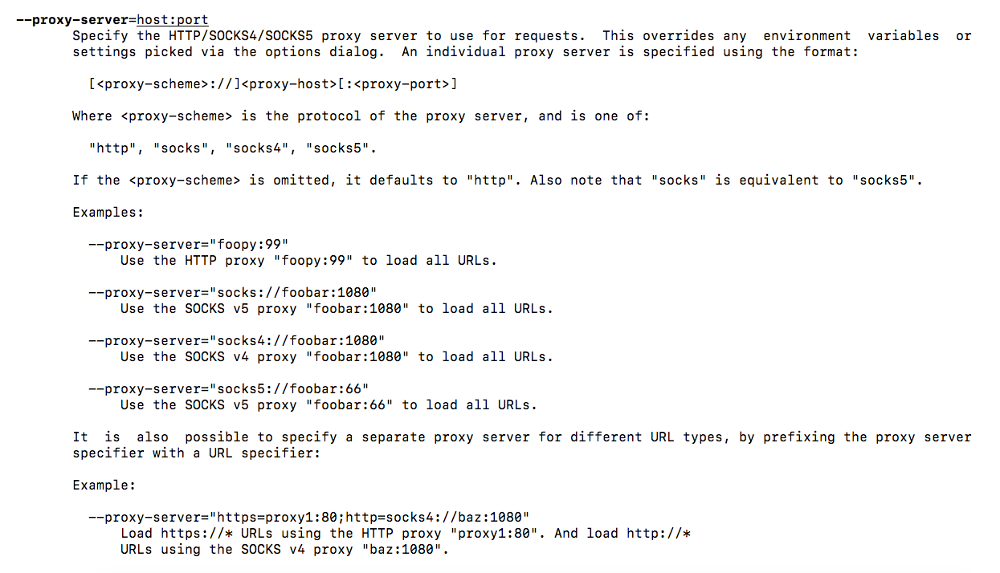

如果是小规模爬虫或模拟效果要求不高的话，使用Selenium HtmlUniDriver基本可以满足需求。但HtmlUnitDriver是基于JS模拟浏览器原理，存在许多浏览器可以做，但它其实无法操作的功能，比如截图等高级功能。
之前爬虫使用Phantomjs，感觉效果还不错，而且使用方便。Phantomjs可以设置远程模式，方便本地调试；方便设置代理，但这里有一个坑，就是代理地址不能是https协议，不然会出问题。但Phantomjs已经目前已经停止更新与维护，而且Google Chrome推出了Headless版本，使用浏览器模式更加符合真是的环境。
安装采坑
Chrome Headless安装没有想象中的简单。刚开始直接通过安装包或添加Chrome源安装均失败，失败的原因是存在各种各样的依赖包。后来找到的Chrome安装的一个脚本，使用这个脚本能够不断地安装缺少的依赖包，从而能够安航成功。
安装系统
Centos6.9Final
安装方式一:通过添加chrome源来安装chrome
## 添加Chrome源
[google]
name=Google – i386
baseurl=http://dl.google.com/linux/rpm/stable/i386
enabled=1
gpgcheck=1
gpgkey=https://dl-ssl.google.com/linux/linux_signing_key.pub
64位系统：
[google64]
name=Google – x86_64
baseurl=http://dl.google.com/linux/rpm/stable/x86_64
enabled=1
gpgcheck=1
gpgkey=https://dl-ssl.google.com/linux/linux_signing_key.pub
## 安装
1.sudo yum install google-chrome-stable 来安装最新稳定版
2.sudo yum install google-chrome-unstable 最新版chrome这里有个问题，可能博主使用的Centos环境有问题。通过此方式安装之后存在各种依赖问题，导致无法安装成功。
安装方式二：下载安装
## Ubuntu系统安装，此方通过修改URL路径，适用于Centos
sudo apt-get install libxss1 libappindicator1 libindicator7
wget https://dl.google.com/linux/direct/google-chrome-stable_current_amd64.deb
sudo dpkg -i google-chrome-stable_current_amd64.deb
sudo apt-get install -f跟上面一种方式一样， 存在各种依赖问题，导致无法安装成功。
使用脚本安装
curl https://intoli.com/install-google-chrome.curl https://intoli.com/install-google-chrome.sh | bash
通过上网查阅发现https://intoli.com这个网站是专门从事headless browsers使用简化，提供云服务的一家公司。其中在该公司的博客中，可以看到许多关于Google Chrome的文章。
该公司提供的这个脚本，能够自动查找相关依赖，并安装。这样我们就不必担心依赖问题，导致无法安装成功。
使用进阶
安装Chrome Headless之后，就可以直接使用了。不过这里有一个注意的点，那就是需要安装ChromeDriver这个东东。
## 下载
wget https://chromedriver.storage.googleapis.com/2.40/chromedriver_linux64.zip
## 解压
tar xvf chromedriver_linux64.zip
## 权限
chmod 755 chromedriver初级使用
初级使用的目标是可以运行起来，不报错，能够完成预期的目标。
代码如下：
/**
* @desc main method
* @param args
* @throws IOException
*/
public static void main(String[] args) throws IOException {
String driverPath = "/root/chrome/chromedriver";
String targetURL = "";
System.setProperty("webdriver.chrome.driver", driverPath);
ChromeDriver driver = getDriver();
// 对网页内容作处理
Document doc = getDocument(targetURL);
// 如果对网页做操作，直接使用Driver
}
/**
* @desc get chrome driver
*/
public static ChromeDriver getDriver() {
String userAgent = AppForum.getAgents();
ChromeOptions options = new ChromeOptions();
options.setBinary("/usr/bin/google-chrome-stable");
options.addArguments("--no-sandbox", "--test-type"，"--headless", "--disable-gpu");
DesiredCapabilities capabilities = DesiredCapabilities.chrome();
capabilities.setCapability(ChromeOptions.CAPABILITY, options);
capabilities.setJavascriptEnabled(true);
ChromeDriver driver = new ChromeDriver(capabilities);
driver.manage().timeouts().setScriptTimeout(5, TimeUnit.SECONDS);
return driver;
}
/**
* @desc crawler html content
* @param url
*/
public static Document getDocument(String url) {
ChromeDriver driver = getDriver();
Document doc = null;
try {
driver.get(url);
doc = Jsoup.parse(driver.getPageSource());
} catch (Exception e) {
} finally {
try {
driver.quit();
} catch (Exception e) {
}
}
return doc;
}
中阶使用
中阶也即提高级，主要区别是开发研究一些重要的功能，比如时候网速、加载速度等内容
- 禁止图片加载
- 等待加载
- 使用UserAgent代理
- 禁止一些选项的加载
- 使用Driver执行特定JS等
代码如下：
/**
* @desc main method
* @param args
* @throws IOException
*/
public static void main(String[] args) throws IOException {
String driverPath = "/root/chrome/chromedriver";
String targetURL = "";
System.setProperty("webdriver.chrome.driver", driverPath);
ChromeDriver driver = getDriver();
// 对网页内容作处理
Document doc = getDocument(targetURL);
// 如果对网页做操作，直接使用Driver
// 执行JS：滚动效果
driver.executeScript("scrollTo(0,10000)");
// 等待加载示例
// 1. 超时加载等待
driver.manage().timeouts().implicitlyWait(20, TimeUnit.SECONDS);
// 2. 等待加载组件
WebDriverWait wait = new WebDriverWait(driver, 20);
wait.until(ExpectedConditions.presenceOfElementLocated(By.cssSelector(".red_box")));
}
/**
* @desc get chrome driver
*/
public static ChromeDriver getDriver() {
HashMap prefs = new HashMap();
prefs.put("profile.default_content_settings", 2);
prefs.put("profile.default_content_setting_values", 2);
prefs.put("profile.managed_default_content_settings.images", 2);
String userAgent = AppForum.getAgents();
ChromeOptions options = new ChromeOptions();
options.setBinary("/usr/bin/google-chrome-stable");
options.setExperimentalOption("prefs", prefs);
options.addArguments("--user-agent=" + userAgent，"--no-sandbox", "--test-type");
options.addArguments("--disable-infobars", "--headless", "--disable-gpu"，"--enable-strict-powerful-feature-restrictions");
options.addArguments("--disable-plugins", "--disable-images", "--start-maximized");
DesiredCapabilities capabilities = DesiredCapabilities.chrome();
capabilities.setCapability(ChromeOptions.CAPABILITY, options);
capabilities.setJavascriptEnabled(true);
return new ChromeDriver(capabilities);
}
/**
* @desc crawler html content
* @param url
*/
public static Document getDocument(String url) {
ChromeDriver driver = getDriver();
Document doc = null;
try {
driver.get(url);
doc = Jsoup.parse(driver.getPageSource());
} catch (Exception e) {
} finally {
try {
driver.quit();
driver.close();
} catch (Exception e) {
}
}
return doc;
}
高级使用
设置代理服务器
代理服务器的设置，可以参考Google-chrome的帮助信息，在代码层面很容易实现。

Driver生命周期
在我们的代码中“new ChromeDriver()”的时候，产生了多个外部进程，如下所示
root 8508 8499 1 04:26 ? 00:00:01 /usr/bin/google-chrome-stable --disable-background-networking --disable-client-side-phishing-detection --disable-default-apps --disable-gpu --disable-hang-monitor --disable-images --disable-infobars --disable-plugins --disable-popup-blocking --disable-prompt-on-repost --disable-sync --disable-web-resources --enable-automation --enable-logging --enable-strict-powerful-feature-restrictions --force-fieldtrials=SiteIsolationExtensions/Control --headless --ignore-certificate-errors --load-extension=/tmp/.org.chromium.Chromium.7tAd3h/internal --log-level=0 --metrics-recording-only --no-first-run --no-sandbox --password-store=basic --remote-debugging-port=0 --start-maximized --test-type --use-mock-keychain --user-agent=Mozilla/4.0 (compatible;MSIE7.0;WindowsNT5.1;Trident/4.0;SE2.XMetaSr1.0;SE2.XMetaSr1.0;.NETCLR2.0.50727;SE2.XMetaSr1.0) --user-data-dir=/tmp/.org.chromium.Chromiumroot 8508 8499 1 04:26 ? 00:00:01 /usr/bin/google-chrome-stable --disable-background-networking --disable-client-side-phishing-detection --disable-default-apps --disable-gpu --disable-hang-monitor --disable-images --disable-infobars --disable-plugins --disable-popup-blocking --disable-prompt-on-repost --disable-sync --disable-web-resources --enable-automation --enable-logging --enable-strict-powerful-feature-restrictions --force-fieldtrials=SiteIsolationExtensions/Control --headless --ignore-certificate-errors --load-extension=/tmp/.org.chromium.Chromium.7tAd3h/internal --log-level=0 --metrics-recording-only --no-first-run --no-sandbox --password-store=basic --remote-debugging-port=0 --start-maximized --test-type --use-mock-keychain --user-agent=Mozilla/4.0 (compatible;MSIE7.0;WindowsNT5.1;Trident/4.0;SE2.XMetaSr1.0;SE2.XMetaSr1.0;.NETCLR2.0.50727;SE2.XMetaSr1.0) --user-data-dir=/tmp/.org.chromium.Chromium.4Sd7ob data:,
root 8515 8508 0 04:26 ? 00:00:00 /opt/google/chrome/chrome --type=zygote --no-sandbox --enable-logging --headless --log-level=0 --headless --user-agent=Mozilla/4.0 (compatible;MSIE7.0;WindowsNT5.1;Trident/4.0;SE2.XMetaSr1.0;SE2.XMetaSr1.0;.NETCLR2.0.50727;SE2.XMetaSr1.0) --enable-crash-reporter
root 8539 8508 0 04:26 ? 00:00:00 /opt/google/chrome/chrome --type=gpu-process --enable-logging --headless --log-level=0 --no-sandbox --headless --user-agent=Mozilla/4.0 (compatible;MSIE7.0;WindowsNT5.1;Trident/4.0;SE2.XMetaSr1.0;SE2.XMetaSr1.0;.NETCLR2.0.50727;SE2.XMetaSr1.0) --enable-crash-reporter --gpu-preferences=KAAAAAAAAACAAACAAQAAAAAAAAAAAGAAEAAAAAAAAAAAAAAAAAAAAAgAAAAAAAAA --use-gl=swiftshader-webgl --override-use-software-gl-for-tests --headless --user-agent=Mozilla/4.0 (compatible;MSIE7.0;WindowsNT5.1;Trident/4.0;SE2.XMetaSr1.0;SE2.XMetaSr1.0;.NETCLR2.0.50727;SE2.XMetaSr1.0) --enable-crash-reporter --enable-logging --log-level=0 --service-request-channel-token=84633B7AB3844DE44C0ADE5922EAFCB4
root 8551 8515 9 04:26 ? 00:00:12 /opt/google/chrome/chrome --type=renderer --enable-automation --enable-logging --log-level=0 --no-sandbox --test-type --use-gl=swiftshader-webgl --disable-gpu-compositing --service-pipe-token=0D2C2CC1CF67A5903FDFECE210FEB597 --lang=en-US --headless --user-agent=Mozilla/4.0 (compatible;MSIE7.0;WindowsNT5.1;Trident/4.0;SE2.XMetaSr1.0;SE2.XMetaSr1.0;.NETCLR2.0.50727;SE2.XMetaSr1.0) --enable-crash-reporter --num-raster-threads=1 --service-request-channel-token=0D2C2CC1CF67A5903FDFECE210FEB597 --renderer-client-id=4 --shared-files=v8_context_snapshot_data:100,v8_natives_data:101可以看出其中只有一个Google-chrome浏览器的进程，其余三个是对应ChromeDriver的进程。这些进程实际上是通过系统层面来管理，我们的程序无法直接去操作进程的状态，比如Kill/Shutdown等，因此需要格外主要这些进程的生命周期。
如果我们的程序正常退出或意外推出了，这些进程有可能还存在于系统当中，占有一定资源，一般来说这些进程占有的资源从50MB-300MB之间，甚至更多。保留在系统中的这些进程，最终会成为”僵尸”进程，不退出也不释放资源。
一种简单粗暴的做法是，在系统中启动一个crontab任务，定期清理超过一定时间的chrome进程：
## 执行脚本：这里设置的阈值为5分钟
#!/bin/bash
## check PID's process time
function show_elapsed_time()
{
user_hz=$(getconf CLK_TCK)
pid=$1
jiffies=$(cat /proc/$pid/stat | cut -d" " -f22)
sys_uptime=$(cat /proc/uptime | cut -d" " -f1)
last_time=$(( ${sys_uptime%.*} - $jiffies/$user_hz ))
if [ $last_time -gt 600 ] ; then
echo "kill process : $pid"
kill -9 $pid
fi
echo "the process $pid lasts for $last_time seconds."
}
echo ""
echo `date "+%Y-%m-%d %H:%M:%S"`
for item in `ps -ef | grep "google-chrome" | grep -v grep | awk '{print $2}' `;
do
echo "PID: $item"
show_elapsed_time $item
done;
## crontab命令
*/1 * * * * sh /root/chrome/check.sh >> /root/chrome/logs.txt 如果是正常退出，或者能够检测到ShutdownHook，可以在ShutdownHook里面全部Kill外部的Chrome进程：
Runtime.getRuntime.addShutdownHook(Runtime.getRuntime.addShutdownHook(new Thread(){
public void run(){
// 执行脚本，获取外部Chrome进程PID
// 通过PID，KILL进程
// 这里需要用到JNA：
//net.java.dev.jna
// jna
//
}
});
Tab使用
这里还有一个优化的点就是，是不是考虑使用tab标签页来完成每个URL，不需要每次都产生一个Chrome对象，减少程序开支。
本博客所有文章除特别声明外，均采用 CC BY-SA 4.0 协议 ，转载请注明出处！